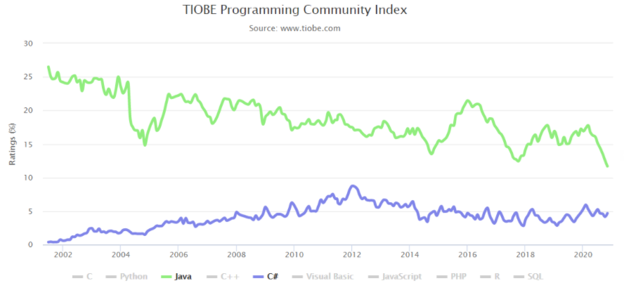

На сегодняшний момент язык программирования C# один из самых мощных, быстро развивающихся и востребованных
языков в ИТ-отрасли. В настоящий момент на нем пишутся самые различные приложения: от небольших десктопных
программок до крупных веб-порталов и веб-сервисов, обслуживающих ежедневно миллионы пользователей.
C# уже не молодой язык и кFк и вся платформа .NET уже прошел большой путь. Первая версия языка вышла вместе
с релизом Microsoft Visual Studio .NET в феврале 2002 года. Текущей версией языка является версия C# 9.0,
которая вышла 10 ноября 2020 года вместе с релизом .NET 5.
Преимущества C#
- Данный язык использует объектно-ориентированный подход к программированию во всем. Это означает, что
тебе нужно будет описывать абстрактные конструкции на основе предметной области, а потом реализовывать
между ними взаимодействие.
- Также в языке присутствует обилие синтаксического сахара, который делает тяжелую жизнь программиста
капельку слаще. Вместо того, чтобы писать 100500 строк кода, ты просто используешь готовую конструкцию,
а компилятор сделает за тебя всю грязную работу. Но некоторые такие конструкции являются не самыми
оптимальными с точки зрения производительности. Но все это перекрывается за счет удобочитаемости кода и
высокой скоростью разработки.
- Mного синтаксического сахара. Синтаксический сахар - это такие конструкции, которые созданы для
облегчения написания и понимания кода (особенно если это код другого программиста) и не играют роли при
компиляции;
- B последнее время много совершенствуется. Так как C# был создан позже, чем Java и другие языки, то
требовалось очень много доработать. Также это касается популяризации и бесплатности - было обещано
открыть исходный код, а инструменты (Visual Studio, Xamarin) стали бесплатными для частных лиц и
небольших компаний;

Pис. 1 Этот график отражает статистику веб-поиска. Java лидирует с большим отрывам, но ее
популярность заметно снижается.
Недостатки языка C#
- Oриентированность, в основном, только на .NET (на Windows платформу);
- Язык бесплатен только для небольших фирм, индивидуальных программистов, стартапов и учащихся . Крупной
компании покупка лицензионной версии этого языка обойдется в круглую сумму;
- В языке осталась возможность использования оператора безусловного перехода.
- Необходимо отметить, что язык C# не представляет собой сложности для новичков, так как его легко изучить
и понять.